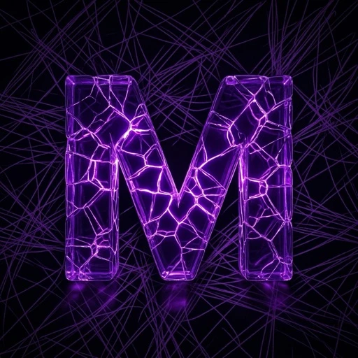

iOS · App Store'da yayında

MosaicaDream: Uyku ve Rüya
Uyku, rüya ve bilinç farkındalığı uygulaması. Kullanıcı rüyasını yazar; NLP motoru rüyayı kelime düzeyinde analiz eder ve arketip, entropi ve zaman dilimi kayması istatistiklerini çıkarır. Paylaşılan rüyalara yapılan yorumlar, Supabase Realtime ile rüya sahibine anlık bildirim olarak iletilir. Ayrıca lucid rüya teknikleri rehberi ve uyku rutini içerir.
- React Native
- Expo
- Supabase (Realtime)